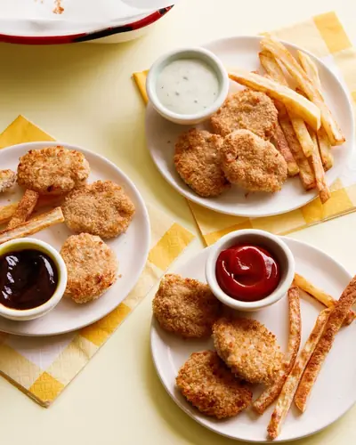

Easy Chicken Nuggets

Ingredients
- 1 pound boneless, skinless chicken breasts, cut into chunks
- 1/4 cup old fashioned oats (also known as 5 minute oats)
- 1/4 teaspoon dried parsley
- 1/2 teaspoon garlic powder
- 1/4 teaspoon onion powder
- 1/2 teaspoon kosher salt
- 3/4 cup panko bread crumbs
- 1 tablespoon grated parmesan cheese
Steps
- Preheat oven to 375°F.
- Place the first 6 ingredients in a food processor until chicken is finely chopped and ingredients are combined.
- Place the bread crumbs and parmesan cheese in a shallow bowl or on a plate and stir to combine.
- With moistened hands, roll 1 tablespoon of chicken mixture between your palms and flatten it into a “nugget” shape.
- Gently press nuggets into bread crumbs to evenly coat them.
- Place nuggets on parchment lined baking sheet and lightly spray nuggets with cooking spray.
- Bake for 12-15 minutes or until golden and serve. If you want your nuggets to be more golden brown, place under the broiler for 2 minutes after cooking. Air frying instructions are in the notes below!
Recipe by Weelicious, from Weelicious. Saved here for personal use; the original has the full notes, tips and photos. Open original